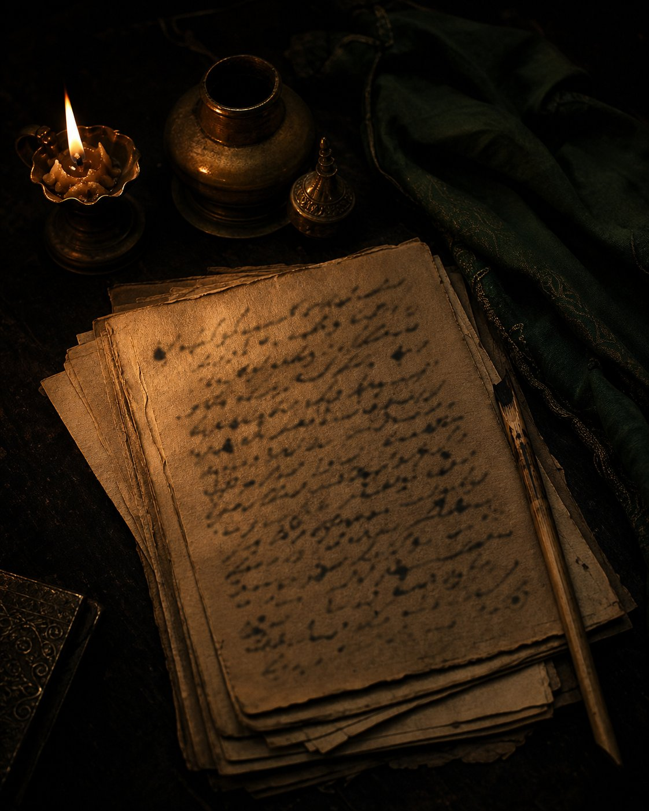

تَمَّتِ القصيدة
مِن بين طَيّات الديوان
قصيدة مختارة
تصنيف القصائد
أبواب القصائد
لا توجد قصائدُ تُطابِقُ بحثَك في هذا الباب.
المكتبة الصوتية
قصائدُ الديوان بصوت الشاعر صلاح الدين الخزاعي

عن الشاعر
صلاح الدين الخزاعي
حِبرٌ يَكتُب، وَأَثَرٌ يَبقى
ابقَ على تواصل